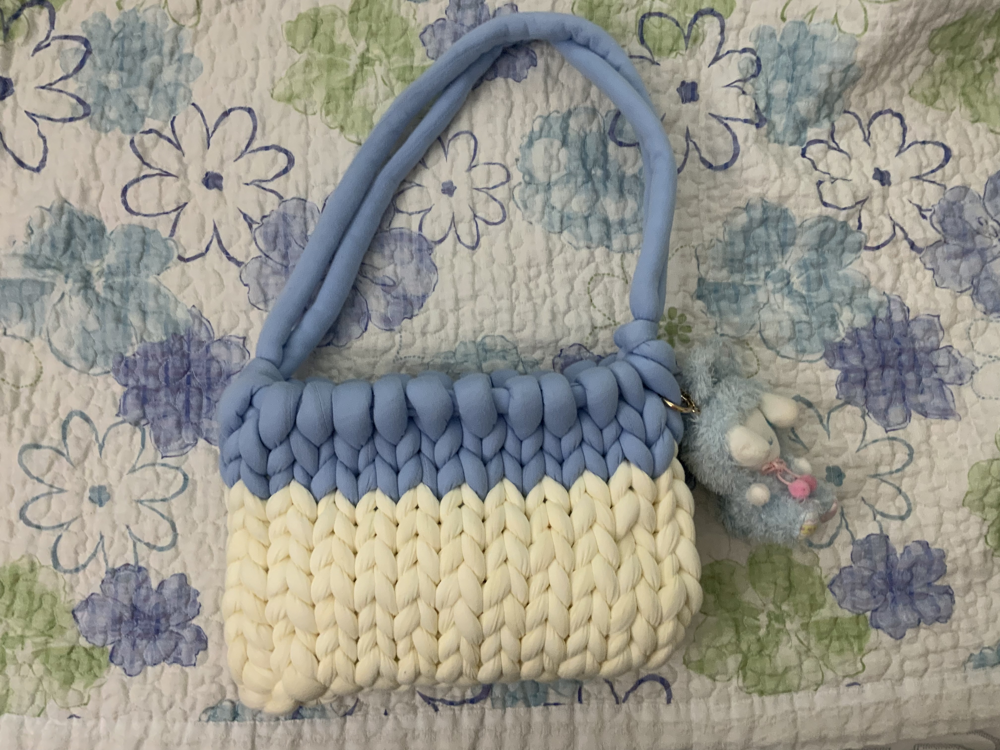
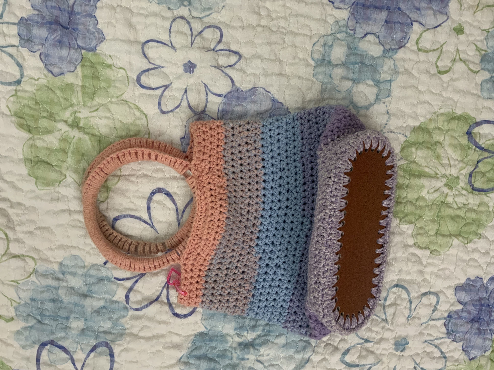

"Monica Crocheting"
The Four handbags that I made was from my head imagine and some of other bag is from on Youtube that I followed but I desgin the style in my own images.

Chunky Bag
The first that I'm gonna talk is my chuncky bag the left over yarn that I used and this yarn was popular in Korea a little month ago but now nobody doesn't like it because its to big and heavy to carry on but for me I like how its chuncky and cute and its so easy to make it also if the person doesn't like to make bag with the chuncky yarn it can also make a rugs or pillow to sit on with a chair.

rainbow bag
This is my second rainbow handbag that I made in Busan when I was on a vacation.